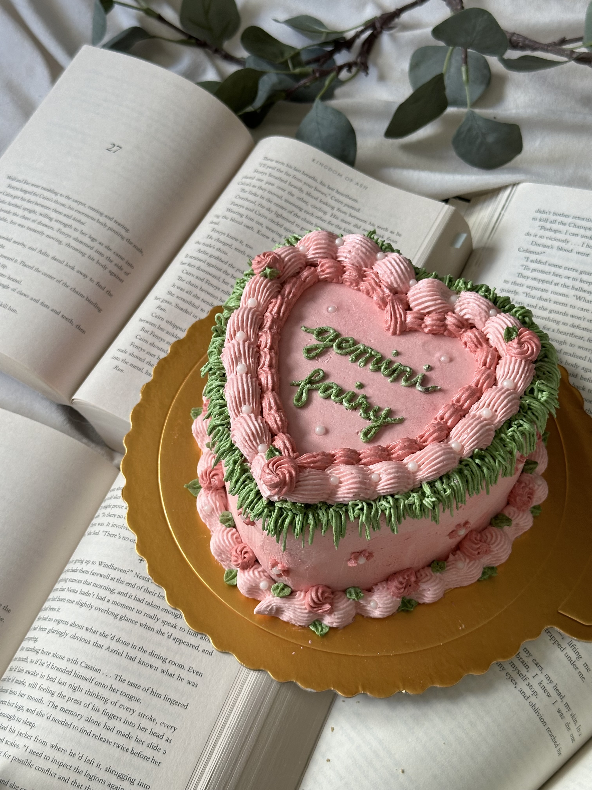
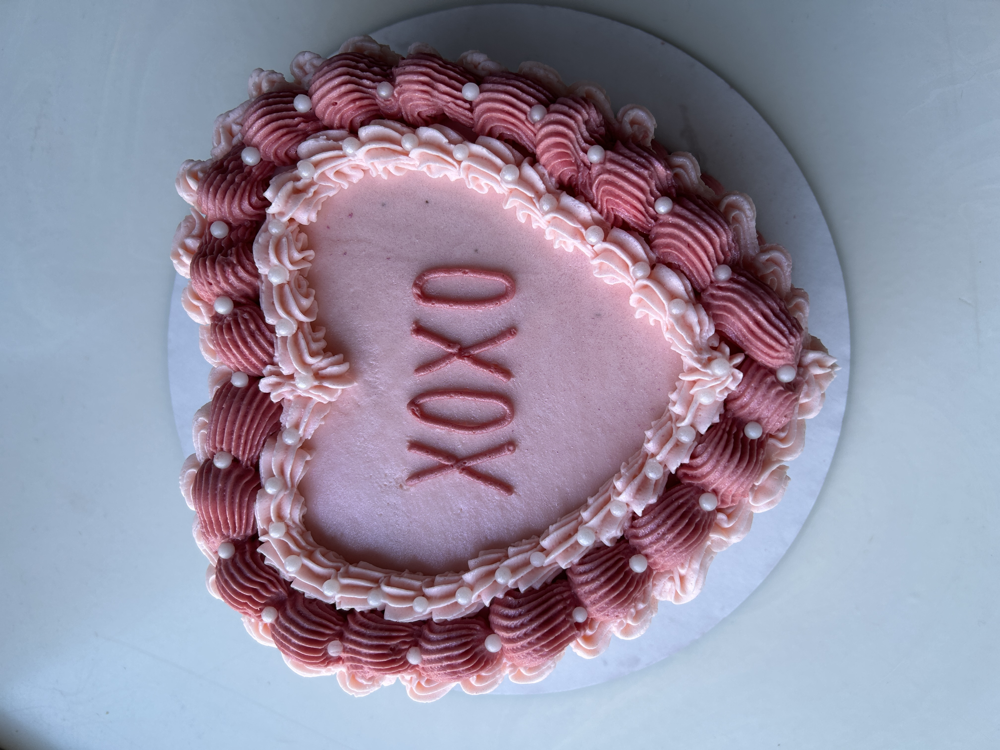
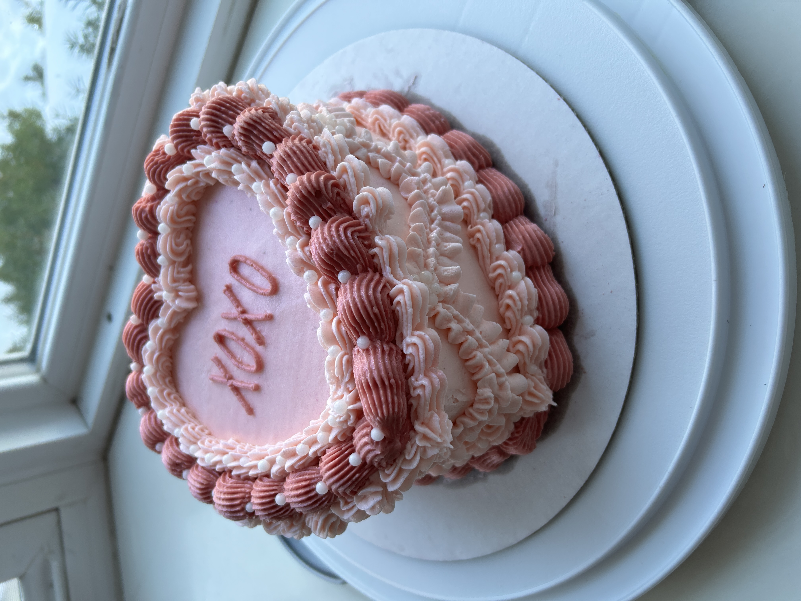
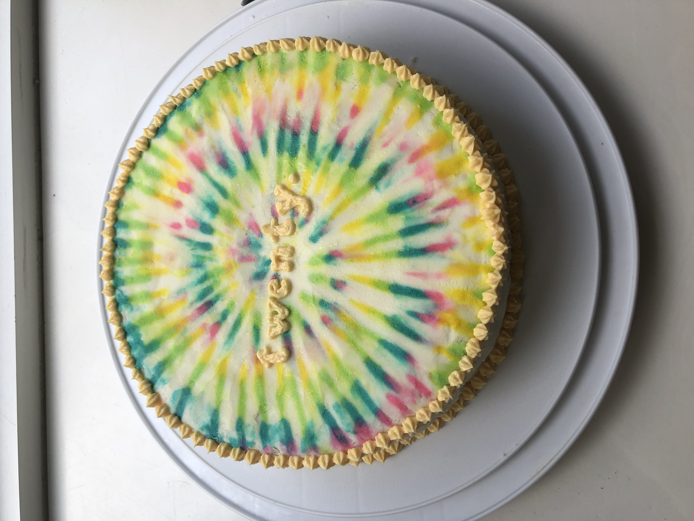
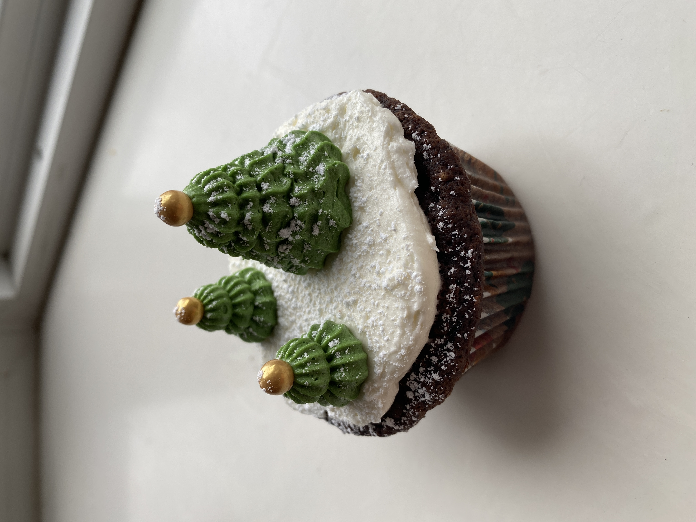
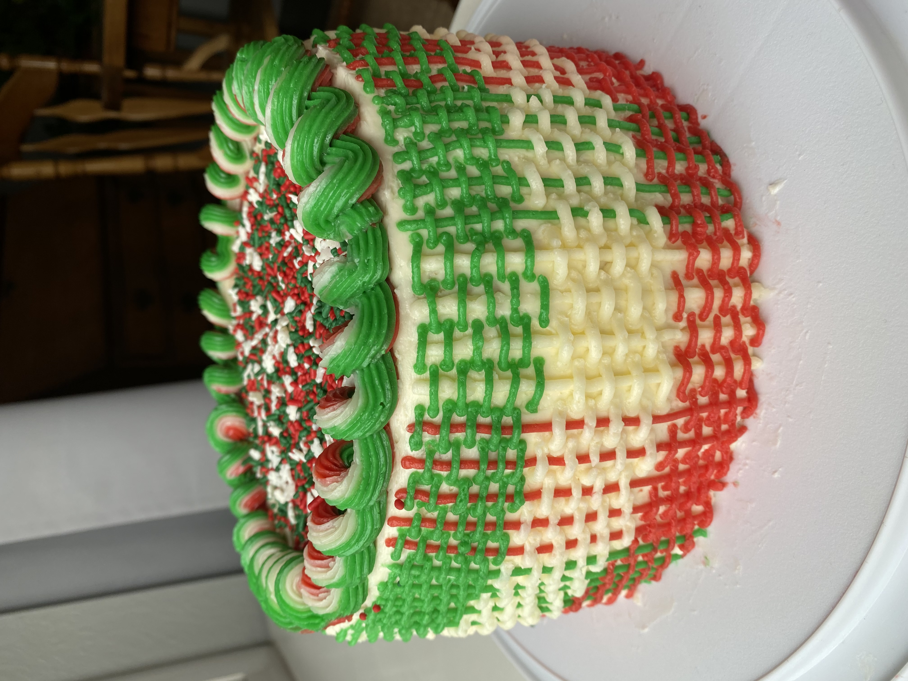
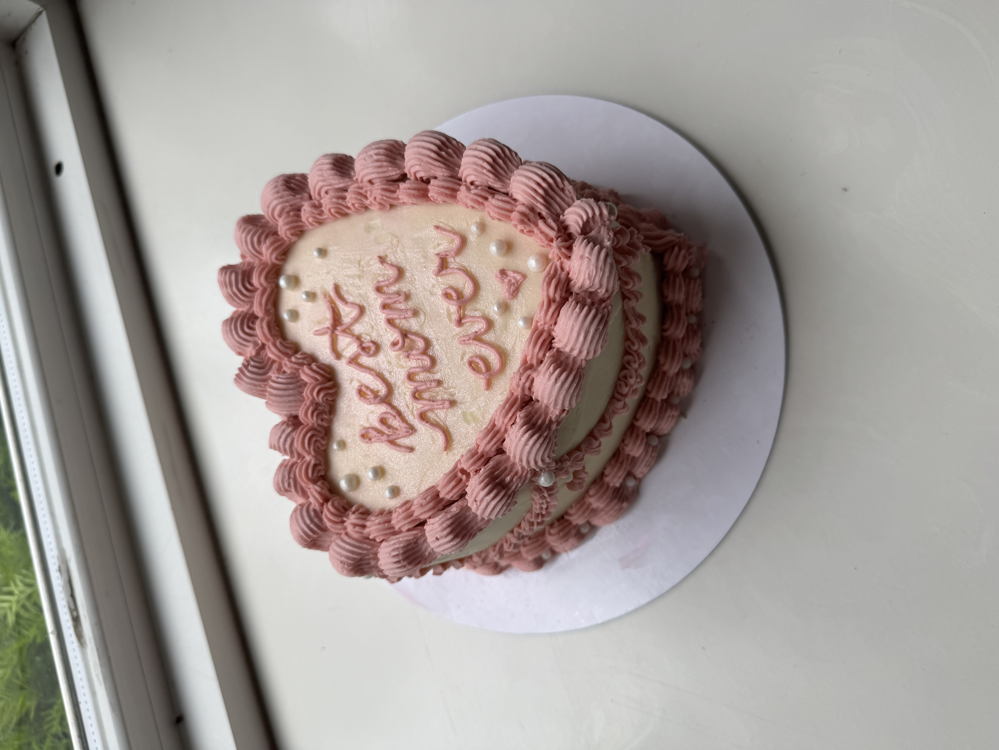

Baking
Baking and cake decorating have become another hobby where I explore creativity through form, color, and detail. Designing cakes and cupcakes draws on the same trend research, visual intuition, and precision as my nail art, but it also challenges me to think in three dimensions. Working across different mediums (frosting and various piping techniques, fondant, candy melts, sprinkles, etc.) pushes me to experiment with structure and texture in a way that mirrors physical product design and prototyping while strengthening my spatial awareness. Below are a few examples of baked goods that reflect my creativity, attention to detail, and three-dimensional craftsmanship.










← Back to Home